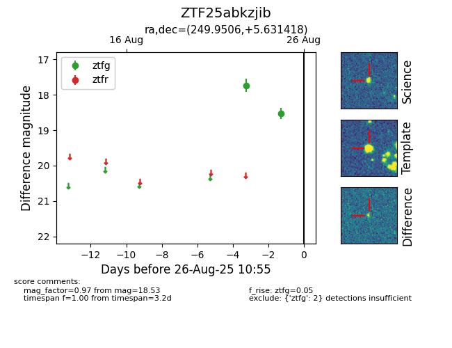

Target ZTF25abkzjib at 2025-08-26 10:55, see:
FINK: fink-portal.org/ZTF25abkzjib
Lasair: lasair-ztf.lsst.ac.uk/objects/ZTF25abkzjib
ALeRCE: alerce.online/object/ZTF25abkzjib
alt names
ZTF25abkzjib (ztf,fink)
coordinates:
equatorial (ra, dec) = (249.9506,+5.63142)
galactic (l, b) = (22.1430,+31.73197)
photometry
last ztfg=18.53
2 ztfg detections
